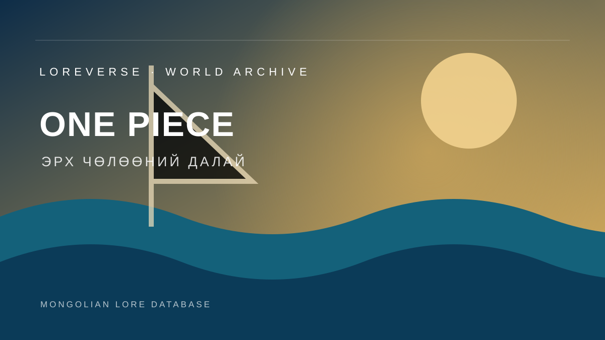

Ертөнц ба түүхэн нөхцөл
Дэлхий нь Улаан шугам, Их шугам, дөрвөн Цэнхэр тэнгисээр хуваагдана. Дэлхийн Засгийн газар, Тэнгисийн цэрэг, Йонко болон хувьсгалчид далайн хүчний тэнцвэрийг бүрдүүлдэг.
Сармагчин Д.Лүффи далайн дээрэмчдийн баг бүрдүүлж, домогт One Piece эрдэнэсийг олохын тулд далай тэнгисээр аялна. Түүний зорилго бол Далайн дээрэмчдийн хаан болох.

Дэлхий нь Улаан шугам, Их шугам, дөрвөн Цэнхэр тэнгисээр хуваагдана. Дэлхийн Засгийн газар, Тэнгисийн цэрэг, Йонко болон хувьсгалчид далайн хүчний тэнцвэрийг бүрдүүлдэг.
Хаки нь Ажиглалтын, Зэвсэглэлийн, Хаадын гэсэн үндсэн төрлүүдтэй. Чөтгөрийн жимс Парамециа, Зоан, Ложиа ангилалтай. Понеглиф, Эртний зэвсэг, Хоосон зуун нь түүхийн гол нууц.
Монки Д.Лүффи — Straw Hat багийн ахмад; Ророноа Зоро — сэлэмчин; Нами — навигатор; Усопп — мэргэн буудагч; Санджи — тогооч; Нико Робин — түүх судлаач; Тони Тони Чоппер — эмч; Фрэнки, Брук, Жинбэй — багийн гишүүд.
Straw Hat Pirates, Дэлхийн Засгийн газар, Тэнгисийн цэрэг, Дөрвөн Йонко, Хувьсгалт арми, Шичибукай (хуучин тогтолцоо), CP байгууллагууд болон олон орны хаант улсууд.
East Blue → Алабаста → Skypiea → Water 7/Enies Lobby → Thriller Bark → Summit War → Шинэ Дэлхий → Dressrosa → Whole Cake Island → Wano → Final Saga.
Албан ёсны анимэний сайт: https://one-piece.com/
Манганы нууц ба анимэний одоогийн ангиудын spoiler түвшнийг тусад нь удирдах.
Энэ хуудас нь LOREVERSE-ийн Монгол хэл дээрх фэн судалгааны материал. Албан ёсны бүтээл биш. Канон, дасан зохицуулалт, фэн таамгийг тусад нь тэмдэглэн шинэчилнэ.
Энэ хэсэг нь ертөнцийн дотоод логик, дүрийн зорилго, хүчний дүрэм, улс төрийн нөхцөл болон үйл явдлын шалтгаан-үр дагаврыг нэгтгэнэ. Спойлерын агуулгатай.
Дэлхийг Red Line ба Grand Line огтолж, далайг дөрвөн Blue-д хуваана. Grand Line-ийн цаг агаар, соронзон урсгал нь навигацийг онцгой болгодог; Calm Belt-д салхи, далайн мангасны аюул бий. World Government, Тэнгэрийн Луунууд, Тэнгисийн цэрэг, Ёнко, Хувьсгалт арми нь дэлхийн эрх мэдлийн гол төвүүд.
Devil Fruit нь хэрэглэгчид онцгой чадвар өгдөг ч усанд сэлэх чадварыг алдуулна. Paramecia, Zoan, Logia нь үндсэн ангилал боловч сэрэлт (Awakening) болон дэд төрөл олон. Haki нь ажиглалт, зэвсэглэл, байлдан дагуулагч гэсэн гурван үндсэн хэлбэртэй. Rokushiki, шинжлэх ухаан, удамшлын хүчин зүйлс зэрэг жимснээс ангид хүчний эх үүсвэрүүд бас бий.
Монки Д. Луффи — далайн дээрэмчдийн хаан болох зорилготой; Ророноа Зоро — дэлхийн шилдэг сэлэмчин; Нами — навигатор; Усопп — мэргэн бууч; Санжи — тогооч; Чоппер — эмч; Робин — Понеглиф уншигч; Фрэнки — усан онгоц бүтээгч; Брук — хөгжимчин; Жинбэй — загас-хүн жолооч. Гол эсрэг хүчнүүдэд Шанкс, Blackbeard, World Government, Marines болон олон Ёнко багтана.
Straw Hat Pirates нь аяллын үндсэн баг. Marines нь World Government-ийн цэргийн хүч; Cipher Pol нь нууц ажиллагаа; Revolutionary Army нь засгийн газрын эсрэг хөдөлгөөн; Yonko нь Шинэ ертөнцийн далайн дээрэмчдийн хүчний тэнцвэрийг тогтооно. Далай тэнгисийн холбоотон, улс орнуудын гэрээ нь багийн нөлөөг өргөжүүлдэг.
1) East Blue-д баг бүрэлдэнэ. 2) Alabasta-д Baroque Works-тэй мөргөлдөнө. 3) Skypiea ба түүхэн Понеглифийн мөр. 4) Water 7/Enies Lobby — Робины өнгөрсөн, World Government-ийн хүч. 5) Thriller Bark, Sabaody, Marineford — баг салж, Далайн дайн өрнөнө. 6) Хоёр жилийн бэлтгэл. 7) Fish-Man Island, Dressrosa, Whole Cake, Wano — Ёнкогийн эсрэг тэмцэл. 8) Egghead ба Final Saga — хоосон зуун, эртний зэвсэг, дэлхийн нууц ил гарна.
Poneglyph — устаж үгүй болохооргүй чулуун бичээс; Void Century — дэлхийн түүхийн зориуд бүдгэрүүлсэн зуун; Road Poneglyph — Laugh Tale хүрэх замын дөрвөн тэмдэг; Will of D. — түүхэн нууцтай холбогдох нэрийн тэмдэг; Ancient Weapons — Pluton, Poseidon, Uranus; Haki — хүсэл зоригийн хүч.
Анимэний урт үргэлжилсэн ангиуд, манганы канон, filler, кино, тусгай ангиудыг ялгана. Final Saga-ийн нууцууд үргэлжлэн тайлагдаж байгаа тул батлагдаагүй таамгийг баримт болгохгүй.